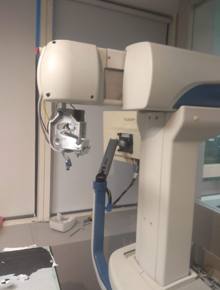
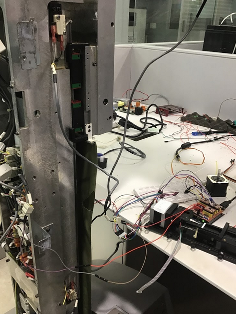
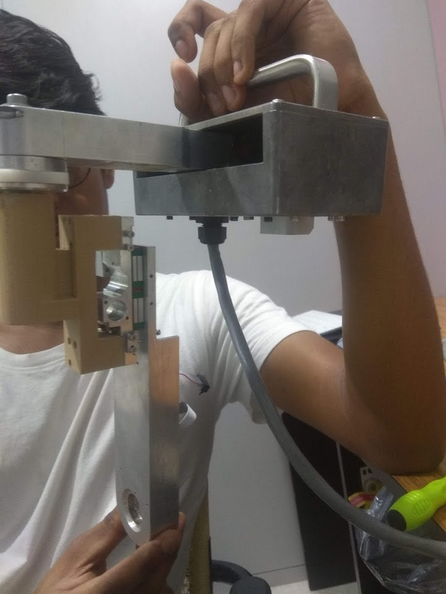
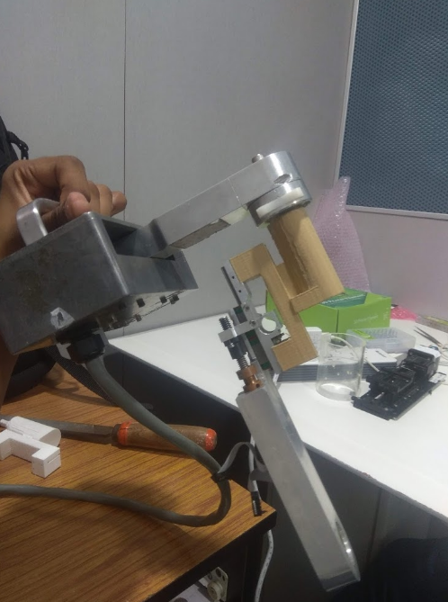
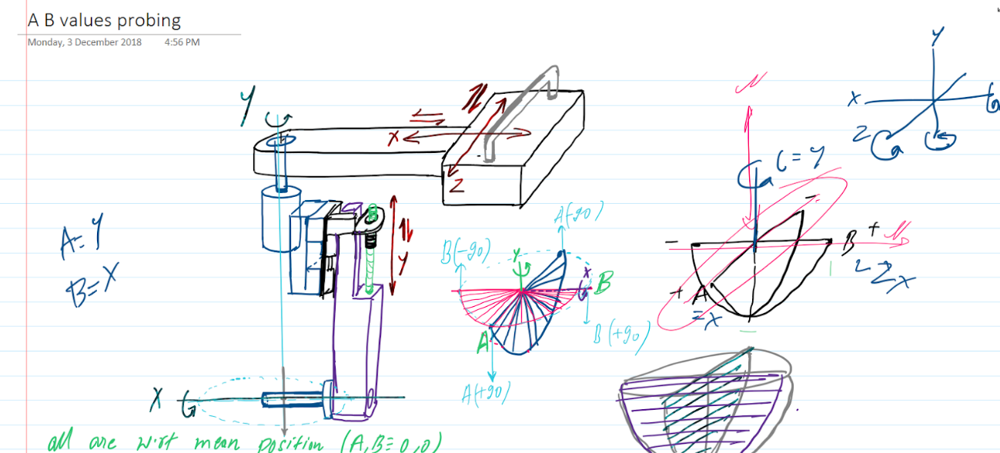

End Effector offset correction in 5-DoF CNC based surgical robot
fig 1. IR depth tracker and the operating needle
During my internship at Healthcare Technology and Incubation Centre in 2018, I worked on surgical robot Maxio by Perfint Healthcare, prototyping for a new design such that we retain zero offset at the end effector needle for any rotational movement at the joints.
The robot had 5 degrees of freedom with translation along X,Y,Z and rotational freedom along Y,Z.

fig 2. Maxio by Perfint Healthcare

fig 3. Reverse Engineering protocol
During the surgery planning for needle insertion we acquire the orientation and coordinates of the end effector w.r.t. the patient and the CT scans using CAD. The robot manipulation during a surgery involved two steps:
- Translation w.r.t. Robot coordinate frame to reach the target coordinates in the medical
- Rotations at the End-effector to achieve the target orientation of the needle insertion

fig 4. Prototype view 1

fig 5. Prototype view 2

fig 6. Diagram for the implemented design
During the Reserves engineering and configuring of the electronics the following were taken care of:
- Micro precision stepper motors and controls using Shield V3 CNC motor drivers.
- Limit switches and safety protocols for the surgery.
- IoT communication interfaces on RS438-USB.